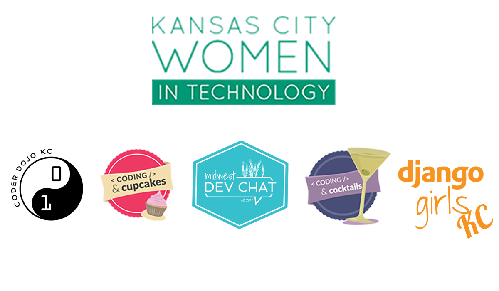

The Definitive Guide to Organizing Community Events
Jennifer Wadella
Thanks to all our sponsors!

Jennifer Wadella
@likeOMGitsFEDAY
- 9-5 Remote Software Engineer
- Nonprofit Founder/Director
- International Speaker
Programs I've launched
KCWiT Analytics Dash
Why Communities Matter
- Workforce development - free training!
- Networking
- Growth Opportunties
- Maslow's Hierarchy - Love/belonging & self-actualization
Community Organizing Guide
- Rules to follow for good events, happy volunteers & happy sponsors
- Fun horror stories so you know you're not alone
- Resources and articles to help you in your community organizing journey
1. Practice Self-Care
This Is What ‘Self-Care’ REALLY Means, Because It’s Not All Salt Baths And Chocolate Cake - link
Avoid Burnout At All Costs

Take on small tasks and improvements
Give yourself office hours
Guard your time carefully
Your time is your biggest asset.
"No." is a complete sentence
Jennifer's First Law
A person's incompetence in email is DIRECTLY PROPORTIONAL to the likelihood that they will massively waste your time
Define your personal scope
and don't go outside it!

Find a task tracking system that works for you
- Trello
- Physical Notepad
- Calendar to-dos
Own your calendar
Calendy - about as close as you can get to a personal secretary
Fielding Criticism
Learn to decipher it
It is extremely hard not to take criticism of your organization as a criticism of yourself
Build your network
- Find other community leaders
- Talk through problems
- Find a mentor
- Mentor budding community leaders
Learn to Delegate
2. Become an Expert Communicator
Never assume people are as tuned in to your organization as you are
Choose your communication format based on your recipients.
When to Slack
- ✅ Convos where everyone is online & available
- ✅ Quick Q&A
- ✅ Random bullshitting/funny links
- ❌ Relaying important org-wide info
- ❌ Feedback
- ❌ Group brainstorming + decision making
Make things EASY for people with lists, call out important information
Date formatting - Day of week, date, time + timezone
If you want a response ...
End with a specific call to action by date
This WILL take more effort & time on your part - but will circumvent many headaches
3. Manage Expectations
People are not psychic.
People are not psychic.
People are not psychic.
“Well I thought it was going to be this …”
The better you can set people up for your events, the better the outcome & the less complaints you will get
“Oh you mean my REAL job?”
Volunteer organizations aren't restricted to traditional business restraints ... NOT
Crazies gonna Cray

4. Don't Neglect Your Volunteers
DO NOT MAKE YOUR VOLUNTEERS HERD CATS.

Make things easy for your volunteers
- Make parking and arrival instructions clear
- Have an emergency contact number available
- Have clear instructions, duties, and responsibilities for your volunteers
- As much as possible keep your volunteers out of the line of fire of criticism (see earlier "Crazies gonna Cray")
Plan your events ahead of time and give your volunteers plenty of notice.
Send reminder emails & create calendar invites - but ensure communication is clear and without conflicting instructions
DO NOT FORGET TO FEED YOUR VOLUNTEERS
Find Ways to Thank Your Volunteers
- Solicit their feedback AND act on it
- Offer leadership opportunities
- Provide nice volunteer shirts
- Plan appreciation dinners/parties
- Promote their efforts (social media, blog profiles)
- Nominate them for awards
Again, this WILL take more effort and time on your part - but it will keep your volunteers coming back.
5. Plan as Far in Advance as Calendarly-Possible
It’s easier to set a 6 month timeline and fill in gaps as you go
Consistency is key - give people something they can regularly schedule
Don't let low attendance shake you - it takes time to grow
Will be easier to book speakers, volunteers, and venues in advance
If you have diversity goals, make an effort sooner rather than later.
6. Confirm the Venue(more than once)
CYA
Vendors and venues have a lot more to focus on than just YOUR event
FOLLOW UP OR LOOK LIKE A JACKASS
As an event organizer it is your responsibility to ensure your event runs as advertised
Be a courteous venue guest
- Shout out on social media
- Clean up after yourself
- Don't overstay your welcome
7. Arrive At Least One Hour Before Starting Time
Setup will ALWAYS take longer than you expect
Your team or speakers WILL be late
Your attendees WILL show up early
8. Test the WiFi
(& bring any supplies needed)
No wifi or shoddy wifi will tank your event in a heartbeat
Test venue setup ahead of time if possible
Have contact information for the person who can reset the router
Bring all the dongles
Your speaker may forget, but it's your event on the line.
9. Have a Designated Chaos Lead
Murphy's Law
What can go wrong will go wrong

There will always be problems you can't plan for
Leadership or mentors with dedicated roles can't be running around to solve problems on the fly.
10. Focus on Process Improvement Wherever Possible
Retrospectives are your best friend

What went well?
What didn't go well?
What could we do better next time?
Repeat emails -> FAQs page
Identify your pain points
& work on those first
Streamline check-in process

Automate posts to social media wherever possible
Begin Gathering Data ASAP
This will take process work, but is worth it's weight in gold.
11. Beware the "dark side" of Organizing
Becoming a community organizer/leader puts you under a microscope
At a certain point, drama is unavoidable
More people = more personalities = more different lived experiences = more conflict
Inclusivity is a myth
The Missing Stair
Do NOT Avoid Conflict
Learn to mediate: understand personality types, communication types, underlying lived experiences. Encourage considering best intent, but be vigilant.
Be a Benevolent Dictator
(with trusted advisors)
Know your values and your walk away point
Summary
- Practice self care
- Become an expert communicator
- Manage expectations
- Don't neglect your volunteers
- Plan as far in advance as calendarly-possible
- Confirm the venue
- Arrive at least one hour before starting time
- Test the wifi (& bring any supplies needed)
- Have a designated chaos lead
- Focus on process improvement wherever possible
- Know about the dark side of community organizing
Questions?

tehfedaykin.github.io/TheDefinitiveGuideToCommunityOrganizing
Don't forget to rate the sessions in the Codemash App!